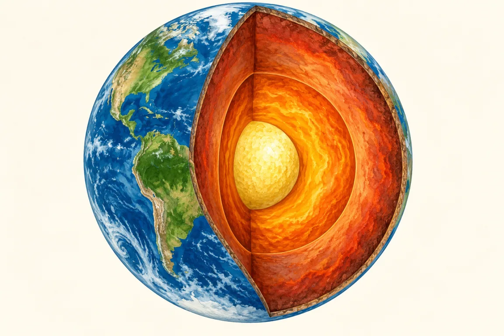
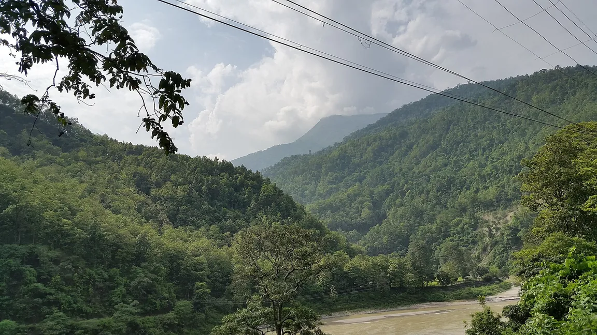
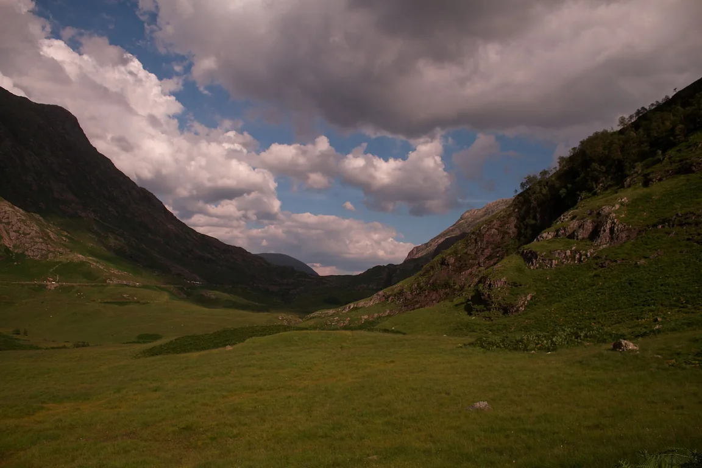
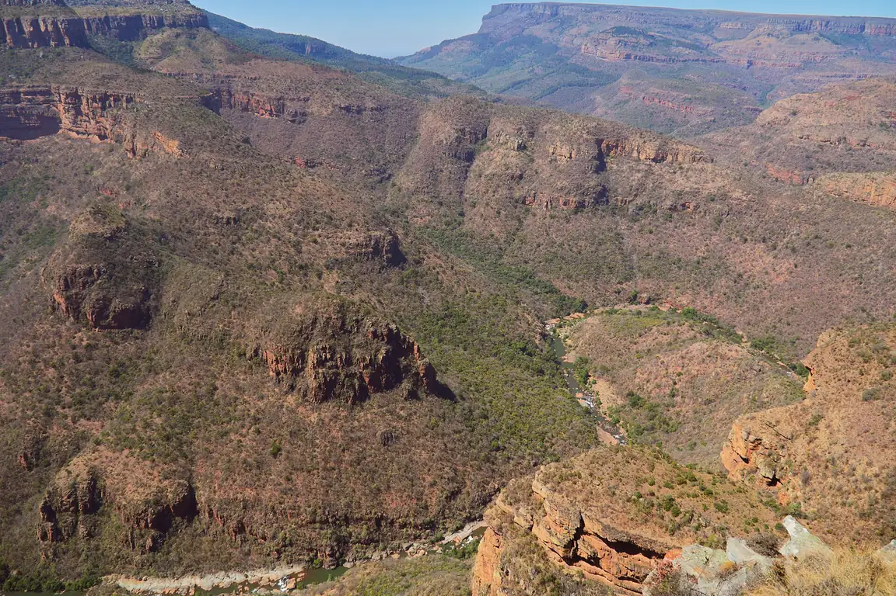
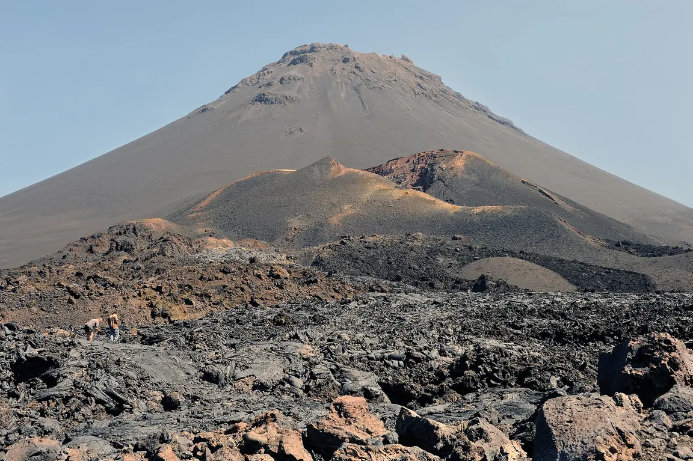
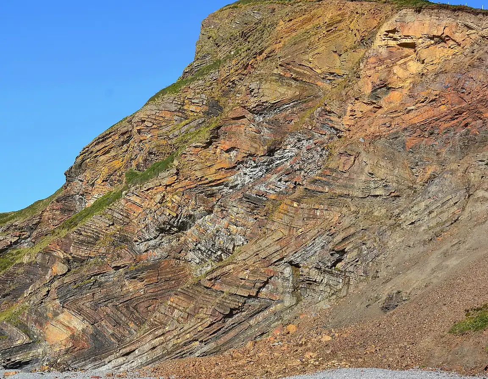
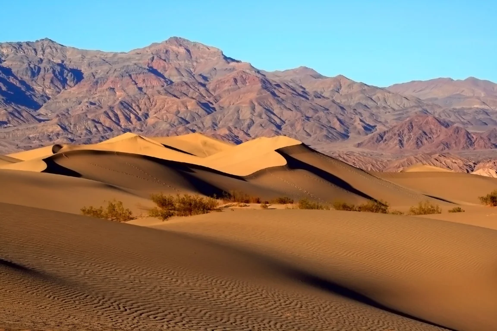
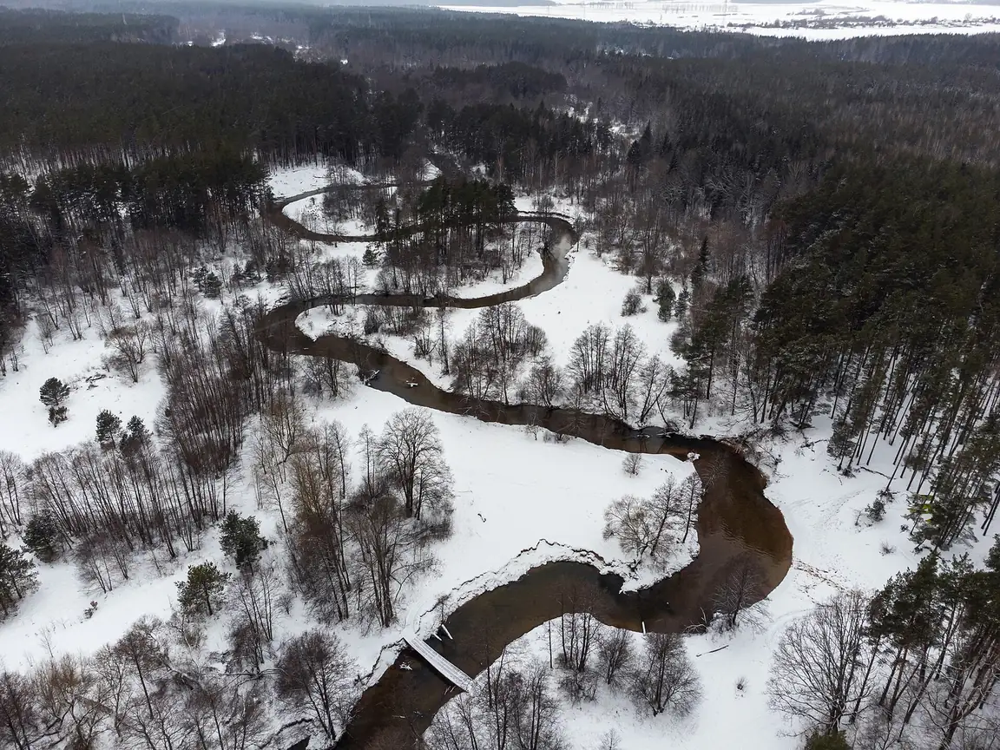
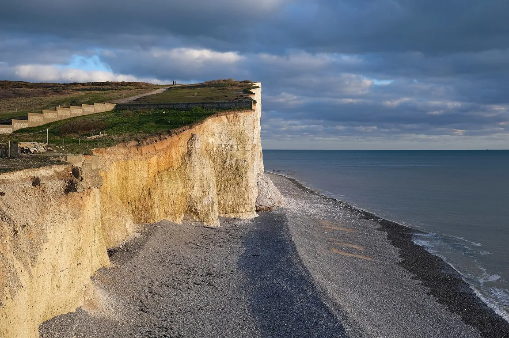

Pro 6. ročník: stavba Země, pohyb desek, sopky, zemětřesení a tvary povrchu.
Prozkoumej nitro Země

Vyber očíslovanou vrstvu.
Vnitřní děje (pohyb desek, sopky, zemětřesení) povrch vyzdvihují,
vnější děje (voda, vítr, led, zvětrávání) ho naopak zarovnávají.
Litosférické desky se pohybují jen několik centimetrů za rok.
Tvary povrchu ve skutečné krajině
Osm tvarů, které vytvořily řeky, ledovce, vítr, moře nebo síly z nitra Země. U každého si všimni, co ho vymodelovalo.

Údolí tvaru VÚzké údolí se strmými svahy a řekou na dně; vyhloubila ho tekoucí voda, která se zařezává do hloubky.

Ledovcové údolí (tvar U)Široké údolí s plochým dnem a příkrými stěnami; vyhloubil ho ledovec, který se údolím pomalu sunul.

KaňonVelmi hluboké úzké údolí se skoro svislými stěnami, často v suché krajině; řeka se zařízla do vrstev hornin.

SopkaKužel navršený z lávy a sopečného popela, nahoře s kráterem; vzniká vnitřními ději.

VrásyPůvodně vodorovné vrstvy hornin zprohýbané do vln; zvrásnil je obrovský tlak při pohybu litosférických desek.

Písečné dunyPahorky písku navátého větrem, s mírnou návětrnou a strmou závětrnou stranou; vítr je pomalu posouvá.

MeandrySmyčky řeky v rovině; voda na vnější straně oblouku břeh podemílá a na vnitřní ukládá písek.

ÚtesStrmá skalní stěna na pobřeží; příboj ji u paty podemílá, až se horní část zřítí.